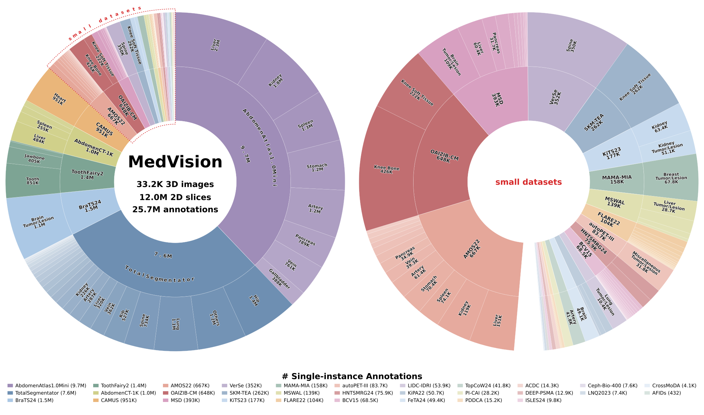
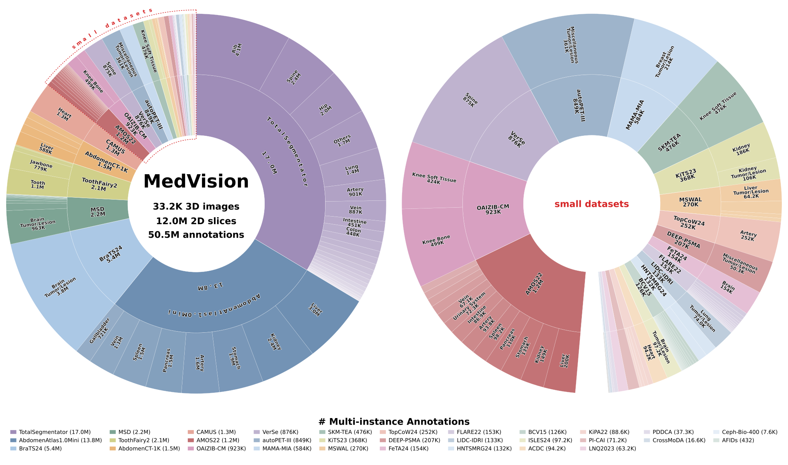

🔎 Dataset Explorer
Pick a body part, choose anatomy labels,
select a modality — then copy the exact load_dataset(...) command for a matching test config.
📊 Dataset Statistics


Pick a body part, choose anatomy labels,
select a modality — then copy the exact load_dataset(...) command for a matching test config.

